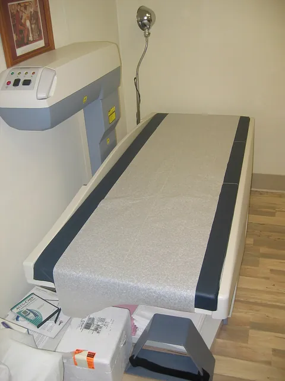
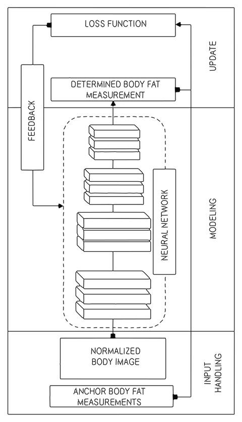

Halo Body
I led Body end to end. Amazon’s CEO set the challenge: a phone scan close to the best body fat scanners. I worked back from the claim we could publish: I moved the training labels from experts’ eyes to clinical instruments, made the scan itself a measured part of quality, and took Body to a peer-reviewed validation.
- Launched
- August 2020Amazon ended Halo in 2023.
- Validated
- 134 adults, npj Digital Medicine, 2022
- Accuracy
- About half the error of the best smart scaleAverage error against a clinical DXA scan: 2.2 points, against 4.5.

Decisions
An accurate body fat number needed a clinic
In 2020, measuring body fat accurately meant a dual-energy X-ray absorptiometry (DXA) scan in a clinic, with a doctor’s prescription.
An accurate scan cost people $75 to $150, and we did not think that made sense for customers. At home, people had body mass index (BMI) and smart scales. A 2020 review of 32 studies found that BMI missed about half of people with obesity. In the 2022 validation study, the best of three consumer smart scales missed DXA by about 4.5 percentage points on average.

A fully automatic scan for any room
Body was one of the first Halo features the team started, years before launch.
The aim was a fully automatic phone scan, easy enough to use at home in any room and any light. Jeff Bezos, then Amazon’s CEO, challenged us to use computer vision to come close to the best body fat scanners. I was the one product leader accountable for Body, end to end. Amazon applied for a patent on the 3D body model on 27 June 2019, 14 months before launch.

The challenge, in my words
The challenge was to get within 1% of the most accurate body fat scanners in the world.
From experts’ ratings to instrument readings
Our first models learned from a panel of fitness experts who judged body fat by eye.
I started from what the customer would read: an accuracy claim we could publish. A claim measured against the most accurate scanners needed their readings to learn from. So we changed the training labels from experts’ ratings to readings from reference instruments. The model we validated learned from DXA body fat percentage and never saw the X-ray images.

How the network learned from few DXA scans
Pairing every training photo with a DXA scan was too expensive. The network first learned to represent human bodies, then was fine-tuned on the photos that had DXA labels.
Four coached photos and three neural networks
A Halo member stood 4 to 6 feet (1.2 to 1.8 meters) from the phone, in tight, minimal clothing, for four coached photos.
The app guided the photos: front, back and each side. In Amazon’s cloud, one neural network separated the person from the room. A second read body fat from the front and back photos only, and a third built a 3D model from the silhouettes. Results came back in seconds.
The capture coach, step by step
The app coached four photos, checking the phone’s level, the distance and the pose, so any room could produce a usable scan.
Illustration
The data as a table
| Step | What the app coached |
|---|---|
| Level | The phone stands upright on a surface, about knee to waist high. |
| Distance | The member steps back, about 4 to 6 feet (1.2 to 1.8 m). |
| Pose | Arms and legs move into the outline on the screen. |
| Photos | Four photos: front, back, left and right. |
Inside the cloud pipeline
In the validation study, the first network labeled more than 98% of pixels correctly as person or background. The front and back images were then scaled to a standard size, to remove the effect of camera distance. An earlier phone method, from 2016, needed a plain background and markers placed by an operator.
A 3D model, a number and a slider
Each Halo member saw a 3D model of their own body beside their body fat percentage.

A slider showed the same body at more or less body fat. From launch day it stopped at the bottom of a healthy range for the member’s sex and age, and Body was for adults only. Photos were deleted from the cloud after processing. The Verge, a technology news site, wrote that the slider “could also be literally dangerous for people with body dysmorphic disorder.”

How the slider worked
Amazon’s patents describe how such a slider works: a trained network predicts the body at the chosen value, and frames in between average the current and predicted bodies. The app compared the number with people of the same sex and age. It suggested a scan every 2 weeks.
Tested at two clinics against DXA
In a blinded study of 134 adults at two clinics, Body’s average error against DXA was about 2.2 percentage points, the lowest of seven methods.
Pennington Biomedical Research Center in Baton Rouge, Louisiana, and Massachusetts General Hospital in Boston ran the study. Amazon sponsored it and saw no DXA result until Body’s estimates were with the investigators; the model had never trained on clinic data. Body’s error stayed the lowest in every subgroup, by sex, BMI and race. npj Digital Medicine, a Nature Portfolio journal, published the study on 29 June 2022.
| Method | Average error |
|---|---|
| Body | 2.2 |
| An air chamber that measures body volume | 3.1 |
| 2 professional devices that send a small current through the body | 3.1 and 4.7 |
| 3 consumer smart scales | 4.5 to 5.9 |
| The paper’s acceptable level | 3 or less |
What changed after launch
From August 2021, members could stand about 1 to 2 feet (30 to 60 centimeters) closer, so Body worked in smaller rooms.
In the clinic, people fasted for 4 hours and wore fitted clothing. At home, WIRED’s reviewer saw readings vary from 26% to 33% with clothing, time of day and dinner. Lab and home perception differed sharply, so we measured Body’s models on real-world data.
Feedback showed the scan itself was part of the quality members perceived, so we measured and improved it. The update changed almost every module of the pipeline and retrained every model on synthetic cropped photos.
How the update was trained
The team collected no new labeled data. It modeled the crops on partial photos from Amazon employees who volunteered in Halo trials. A new model learned to infer the body parts outside the frame, for the 3D model. The app chose head-to-toe or head-to-knee framing on its own.
What lasted
An independent study published in September 2022 tested Body against a stricter reference in 184 adults; only Body’s estimate passed its equivalence test.
Its reference was a four-compartment model, which measures more components of the body than DXA. Results varied by sex and race.
In the OpenAlex research database, the 2022 validation paper ranks in the top 1% of comparable papers by citations. In 2025, four obesity and nutrition societies cited the study in an advisory on nutrition during glucagon-like peptide-1 (GLP-1) obesity treatment.
Two later designs, in Amazon’s patents
Amazon’s later patents describe two further designs. One, filed in August 2021, updates the body model from a face photo, without new full-body photos. Another, filed in September 2022 and granted in April 2026, estimates fat, lean muscle and bone density for each arm, each leg and the trunk.